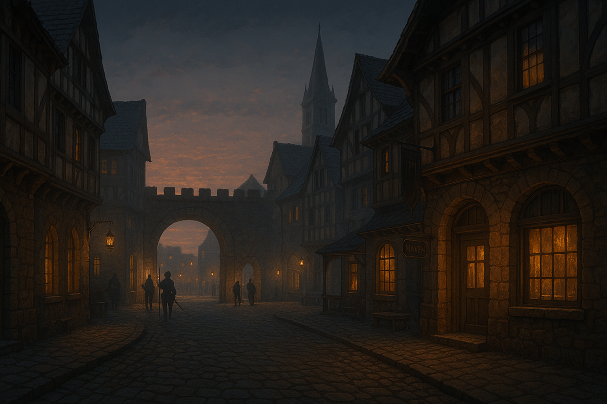

Chapter 4: Wescoe Tour
Curse of Vowalon


Curse of Vowalon
15048.07.21
凌晨，台北市議員來到了魏斯科鎮的入口，守衛們問清了他們的來歷後，才放他們入城。
走入了魏斯科廣場，四周一片寧靜，只有衛兵來回的穿梭。在詢問衛兵後，台北市議員走到了廣場旁的旅店，庇護地。庇護地內的櫃檯人員聽到他們來自沃瓦倫後，態度有點輕蔑，但還是在大家繳了住宿費後帶領台北市議員進入了各自的房間。
隔日，起床後，台北市議員們到對面的餐廳「埃德蒙餐酒館」用餐，這裡是當地最有名的餐館，餐點也的確高級，不過對於這裡的主廚埃德蒙，似乎有些不為人知的傳聞。他們也在魏斯科遊客中心合買了一份地圖。大夥兒分批，遊覽了魏斯科的各大景點。
在魏斯科的拉索斯教堂，服從神社，冒險者們從卡魯神父口中，冒險者們得知了葛蘭倫大法師的住處，並拜訪了他。花了點時間，冒險者們成功說服葛蘭倫大法師，一同回到沃瓦倫鎮，嘗試解除詛咒。
冒險者們和葛蘭倫大法師約好了日落時出發，大家利用下午的時間購買了新的武器、罐頭等補給品，準備再次踏入嚎叫森林，朝著沃瓦倫出發。
15048.07.21
The Taipei City Councilor arrived at the entrance of the town of Wescoe at midnight. After asking their origins and purpose, the guards let them in town.
Waling into the Wescoe Plaza, all was quiet, other than the guards patrolling. After asking the guards, the Taipei City Councilor walked towards the hotel next to the plaza, the Haven. The front desks at the Haven had a contemptuous attitude towards the adventurers after hearing that they came from Vowalon, but still led them to their rooms after they pay for the accomodation fee.
The next day, after they woke up, the TaipeiCity Councilor visited the restaurant "Endmond's Diner". It was the most popular restaurant in the town, and also with high-class dining. But their seemed to be some gossips around the chef Edmond. They also bought a map together at the Wescoe Visitor Center. The adventurers visited famous attractions in Wescoe.
The adventurers visited the Laxthos church, Shrine of Obedience, in Wescoe, and learned where the Archmage Grenland lived from Father Karu, and visited him. After spending some time, the adventurers succesfully persuaded the Archmage Grenland, to come back to Vowalon to lift the curse.
The adventurers and the Archmage Grenland agreed to departure at sunset. They spent the rest of the afternoon to buy new weapons, cans and other supplies, preparing to walk into the Howling Forest again, towards Vowalon.